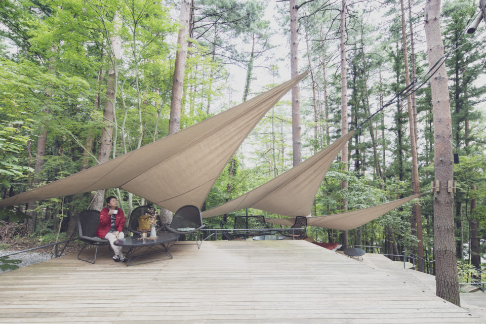
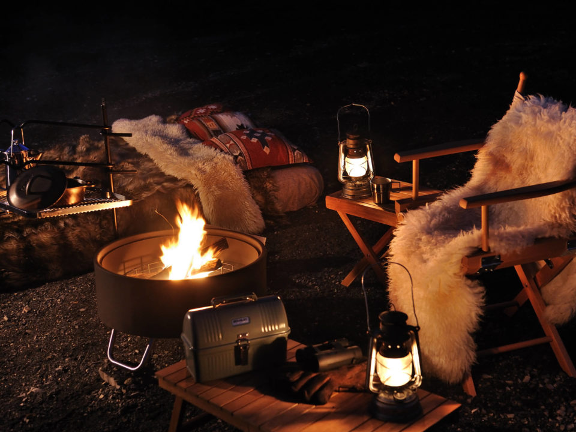
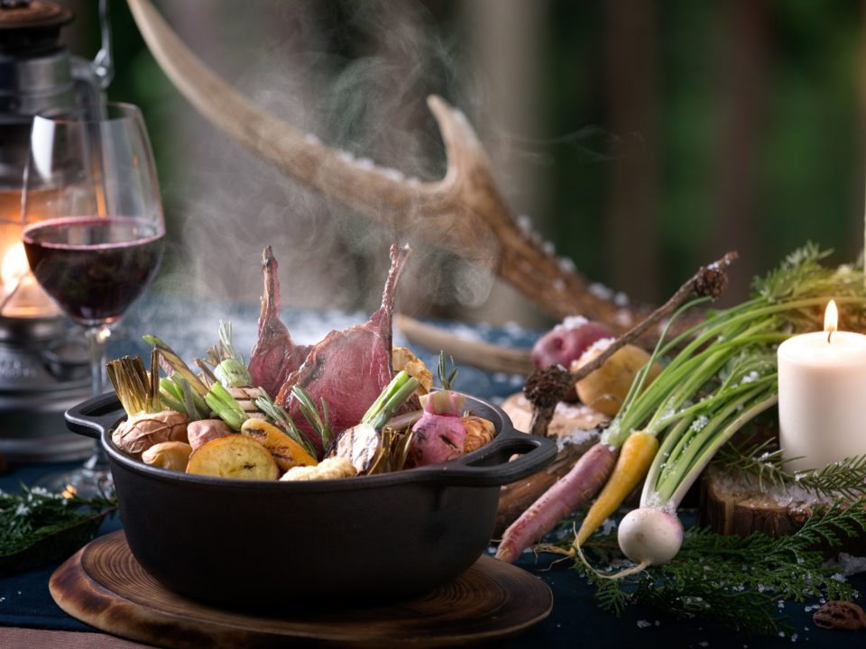
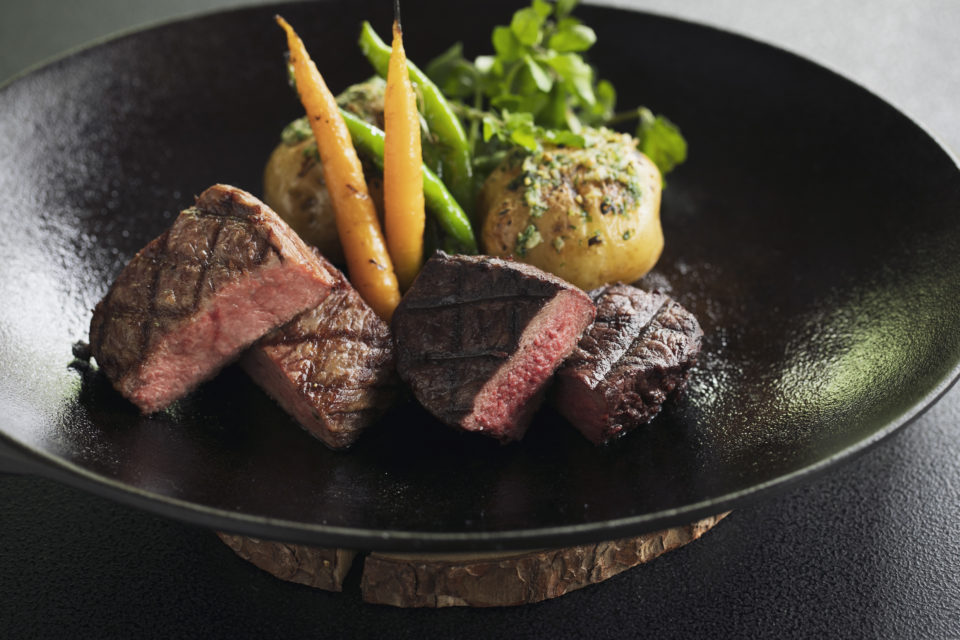

Префектура Яманаси · Фудзикавагутико · где остановиться
HOSHINOYA Fuji: глэмпинг в лесу у подножия Фудзи

В лесу у подножия Фудзи, в посёлке Фудзикавагутико, стоит курорт, где от палаточной жизни оставили только приятное. Ставить тент и носить дрова не нужно, а костёр, лес и ужин на свежем воздухе остаются.
Глэмпинг
Поход без хлопот
HOSHINOYA Fuji открылся в октябре 2015 года и стал первым в Японии настоящим курортом глэмпинга. Идея простая: всё утомительное в походе, от установки палатки до сбора хвороста, берёт на себя курорт, а гостю остаётся то, ради чего вообще едут в лес. Здесь 40 номеров, ресторан и бар.
Главное в здешнем отдыхе это занятия на природе. На курорте работают «мастера глэмпинга», люди, которые умеют жить в лесу с удобством. Они покажут, как развести и поддерживать костёр, и помогут испечь пиццу в каменной печи. Для тех, кто хочет уйти дальше, есть природные экскурсии по Дзюкаю, «морю деревьев» у подножия Фудзи, их ведут профессиональные инструкторы.

Опыт
Охота и копчение
Самой необычной программой курорта был охотничий тур «Учимся ценить жизнь и еду». Осенью 2018 года по средам и пятницам гости уходили вместе с охотником в лес у подножия Фудзи, шли за ним по следу оленя и затем видели своими глазами, как добычу разделывают на мясо.
Копчение в 2018 году предлагали круглый год. Гость выбирал щепу по вкусу и коптил сезонные продукты, а вечером ел их у костра с бокалом виски.

Кухня
Гриль, котелок и котацу
Еда здесь не менее важная часть отдыха. В главном ресторане на гриле крупными кусками жарят местные продукты: дичь и говядину «Яманаси вайн биф». Винная карта богата винами Яманаси, и к мясу их стоит попробовать.
На открытой кухне Forest Kitchen можно готовить самому: мастер глэмпинга подскажет, как обращаться с чугунной утятницей и другой походной посудой, и ужин гость доводит до готовности своими руками. А если хочется провести вечер в номере, можно устроиться с горшочком набэ в гостиной на террасе. Зимой там ставят котацу, низкий стол с обогревом под одеялом.

Номер в 2018 году стоил от 43 800 иен без налога и сервисного сбора.
HOSHINOYA Fuji
- Адрес
- префектура Яманаси, посёлок Фудзикавагутико, Оиси, 1408
- Телефон
- +81 570-073-066 (общее бронирование HOSHINOYA)
- Номера
- 40
- Цены / Вход
- от 43 800 иен за номер без налога и сервисного сбора
- Заезд / выезд
- 15:00 / 12:00
- Как добраться
- на машине около 20 минут от развязки Кавагутико скоростной дороги Тюо; от станции Кавагутико железной дороги Фудзикю около 20 минут на такси